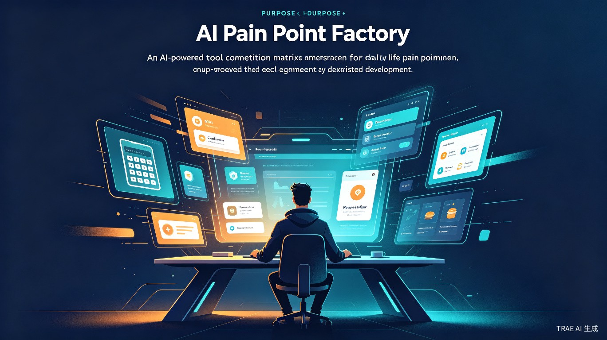
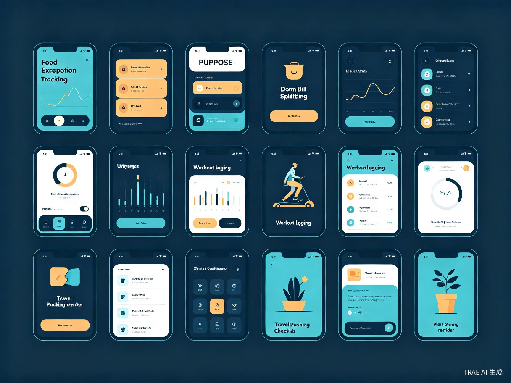
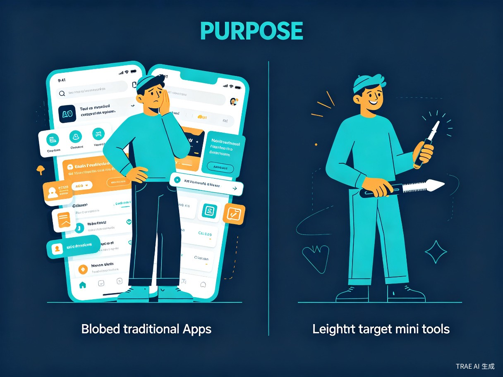

创意名称："AI 痛点制造局"个人开发者矩阵
想解决什么问题：解决普通大众在生活中遇到的各种长尾、细碎的不便（如特定的记账习惯、复杂的换算、小众的提醒需求），因市面上缺乏针对性工具而无法被高效解决的问题。
为什么会想到做这个：作为一个独立开发者，我发现生活中的痛点成千上万，传统开发模式太慢。我想利用 Trae Work 强大的代码生成能力，将自己从重复劳动中解放出来，实现"一天开发一个小程序"的高效能，把想法快速变成用户可用的产品。
大概是什么产品：由我主导开发，涵盖衣食住行各个维度的实用小程序/APP 集合（工具矩阵）。

在日常生活中遇到具体麻烦，厌倦了大型 APP 的臃肿和广告，只想快速解决问题的普通用户：
需要保质期追踪、家庭开支分账、家务排班等工具，现有应用要么太复杂，要么找不到。
宿舍费用分摊、课程表管理、考试倒计时、图书馆占座提醒等小众但刚需的场景。
会议纪要模板、项目进度追踪、薪资税后计算、加班时长统计等高频但分散的需求。
行李清单、行程规划、汇率换算、当地天气提醒等出行前的一站式轻量工具。
用户在特定场景下需要某个单一功能时（例如：只需一个简单的"保质期计算器"或"宿舍分账工具"），直接打开对应的小程序，即用即走，无需下载臃肿的 App。
现有应用功能太复杂，为了一个简单需求要忍受广告、注册、推送通知的轰炸。
根本没有针对该痛点的免费工具，用户只能忍受不便，或用 Excel/备忘录凑合。
传统模式下，一个简单工具从构思到上线需要一周甚至更久，独立开发者难以覆盖大量长尾需求。

展示 Trae Work 如何赋能个人开发者，将原本需要一周的开发周期缩短至几小时，极大提升了社会问题的解决效率。开发者从重复编码中解放出来，专注于需求洞察与产品设计。
验证了"AI + 独立开发者"模式的可行性。通过积少成多的流量和实用性，每个小程序虽然解决的是小众痛点，但汇聚成矩阵后能产生可观的长尾商业价值——这是传统开发模式难以实现的规模效应。